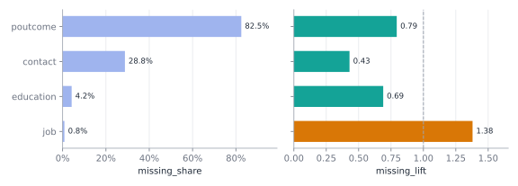

单变量概况#
在仔细地为任何变量分箱之前，先把所有变量放在一起看：每个变量的完整程度如何，取值如何分布，单独区分事件与非事件的能力有多强。 kivi.univariate.profile_table() 用一行概括数据框的每一列，因此全部候选变量可以放在一张表中。
概况是对模型候选变量的第一次审视：候选变量包括申请数据中的列，以及 时间窗特征 由交易流水和还款历史计算的特征。通过筛选的候选变量接下来按 分箱 中的方法仔细分箱， 风控建模流程 则沿后续各步继续处理它们。
分析候选变量#
自带的银行数据用标签 unknown 表示类别变量的缺失值。先把它们转换为缺失值，让概况表统计它们：
>>> import numpy as np
>>> from kivi.datasets import load_bank
>>> from kivi.univariate import profile_table
>>> data = load_bank()
>>> development = data.iloc[:3000]
>>> candidates = development.drop(columns="target").replace("unknown", np.nan)
>>> profile = profile_table(candidates, development["target"])
>>> profile[["kind", "count", "missing_share", "distinct", "top", "top_share"]].round(3)
kind count missing_share distinct top top_share
variable
age numeric 3000 0.000 64 34 0.053
job categorical 2975 0.008 11 management 0.220
marital categorical 3000 0.000 3 married 0.613
education categorical 2875 0.042 3 secondary 0.526
default categorical 3000 0.000 2 no 0.984
balance numeric 3000 0.000 1808 0 0.077
housing categorical 3000 0.000 2 yes 0.567
loan categorical 3000 0.000 2 no 0.844
contact categorical 2137 0.288 2 cellular 0.916
day numeric 3000 0.000 31 20 0.053
month categorical 3000 0.000 12 may 0.307
duration numeric 3000 0.000 764 121 0.007
campaign numeric 3000 0.000 29 1 0.385
pdays numeric 3000 0.000 246 -1 0.825
previous numeric 3000 0.000 18 0 0.825
poutcome categorical 525 0.825 3 failure 0.613

profile_table 把数据框的每一列变成概况中的一行；这里展示十六列中的五列、29 项统计中的四项。灰色的缺失值计入 missing_share 。#
每一列占一行，以列名为索引：
kind对 bool 以外的数值 dtype 为numeric，对其他所有 dtype 为categorical，与fit_spec()相同。count和missing统计有取值和无取值的行数，missing_share是无取值的行所占的比例。poutcome对 82.5% 的客户缺失，即未参加上一次营销活动的客户。distinct是不同取值的个数。top是最常见的取值，top_share是它在有取值的行中所占的比例。比例接近 1 表示该变量几乎是常数：98.4% 的客户的default为 no。
数值变量的分布#
数值列还给出均值、样本标准差、最小值、1%、50% 和 99% 分位数以及最大值。类别列为 NaN：
>>> numeric = profile["kind"] == "numeric"
>>> profile.loc[numeric, ["min", "q01", "q50", "q99", "max"]]
min q01 q50 q99 max
variable
age 19.0 23.0 39.0 71.01 86.0
balance -2082.0 -701.0 461.5 13343.52 42045.0
day 1.0 2.0 16.0 31.00 31.0
duration 4.0 11.0 185.0 1259.16 3025.0
campaign 1.0 1.0 2.0 15.00 50.0
pdays -1.0 -1.0 -1.0 370.01 871.0
previous 0.0 0.0 0.0 8.00 20.0
1% 和 99% 分位数显示了大部分取值的范围。 balance 的最大值是其 99% 分位数的三倍，说明少数客户的余额远高于其他人。 pdays 的中位数为 -1，这是此前从未联系过的客户的编码。
另有三列描述数值分布的形态。 skewness 和 kurtosis 是偏差校正后的样本偏度和超额峰度，与 pandas.Series.skew 和 pandas.Series.kurt 的计算相同； cv 是变异系数，即标准差除以均值：
>>> profile.loc[numeric, ["mean", "std", "cv", "skewness", "kurtosis"]].round(3)
mean std cv skewness kurtosis
variable
age 40.995 10.483 0.256 0.686 0.316
balance 1382.438 2757.764 1.995 4.860 37.641
day 15.890 8.217 0.517 0.094 -1.032
duration 264.170 258.600 0.979 2.711 11.764
campaign 2.753 3.001 1.090 4.755 39.061
pdays 38.198 98.245 2.572 2.768 8.220
previous 0.513 1.553 3.026 4.996 35.354
正态分布的偏度和超额峰度都为 0。 balance 、 campaign 和 previous 的偏度接近 5，峰度超过 35：少数极大的取值形成长长的右尾，等频分箱能吸收它们，但它们会主导均值以及对原始取值的任何线性拟合。 day 在一个月内分布得几乎均匀，峰度为 -1。变异系数可以比较不同尺度上的离散程度： previous 的标准差是其均值的三倍， age 的标准差只有均值的四分之一。它的符号与均值相同，均值为 0 时为 NaN。偏度至少需要 3 个取值，峰度至少需要 4 个；所有取值都相等时两者均为 NaN。
按 IV 筛选变量#
iv 列是快速分箱的信息值：数值列使用 bin_edges() 的 bins 个等频箱，每个特殊值编码单独成组；类别列使用其标签。缺失值单独成组。 gini 列是把数值列的取值作为评分时的 Gini 系数：事件的取值较高时为正，较低时为负。
>>> ranking = profile.sort_values("iv", ascending=False)
>>> ranking[["kind", "iv", "tied_bins", "gini"]].round(3)
kind iv tied_bins gini
variable
duration numeric 1.594 False 0.627
poutcome categorical 0.423 False NaN
month categorical 0.334 False NaN
contact categorical 0.215 False NaN
job categorical 0.137 False NaN
housing categorical 0.108 False NaN
balance numeric 0.099 False 0.183
loan categorical 0.059 False NaN
education categorical 0.050 False NaN
marital categorical 0.049 False NaN
campaign numeric 0.031 True -0.093
age numeric 0.019 False 0.009
day numeric 0.011 False -0.048
default categorical 0.000 False NaN
pdays numeric 0.000 True 0.175
previous numeric 0.000 True 0.199
这些正是 风控建模流程 筛选步骤中的 IV，该步骤以同样的方式为每个候选变量分箱。 bin_edges 会对重合的分位数发出警告； profile_table() 则将其记录在 tied_bins 中，因此分析很多列时不会产生警告。 pdays 和 previous 的大多数取值分别是 -1 和 0，因此它们重合的分位数合并为一个箱，在仔细分箱之前，IV 为 0 会低估它们的作用： pdays 要像下文那样使用特殊值编码， previous 要使用自定义边界。
另外两列从其他角度衡量区分能力。 ks 是把数值列的取值当作评分时的 KS 统计量，即事件与非事件累计分布之间的最大差距，与 ks() 的计算相同；与 gini 不同，它没有符号，无论取值方向如何都在 0 到 1 之间。 chi2_p_value 是目标与快速分箱各组（与 iv 的分组相同）之间卡方独立性检验的 p 值，自由度比组数少 1：
>>> ranking[["iv", "chi2_p_value", "ks"]].round(3)
iv chi2_p_value ks
variable
duration 1.594 0.000 0.473
poutcome 0.423 0.000 NaN
month 0.334 0.000 NaN
contact 0.215 0.000 NaN
job 0.137 0.000 NaN
housing 0.108 0.000 NaN
balance 0.099 0.000 0.150
loan 0.059 0.000 NaN
education 0.050 0.002 NaN
marital 0.049 0.000 NaN
campaign 0.031 0.016 0.072
age 0.019 0.205 0.062
day 0.011 0.511 0.057
default 0.000 0.796 NaN
pdays 0.000 1.000 0.192
previous 0.000 1.000 0.192
在 3000 行数据上，IV 高于 0.03 的每一列的 p 值都低于 0.05：行数这么多时，即使很弱的关系也是显著的，因此 p 值不能用来给各列排序。较大的 p 值更能说明问题： age 、 day 和 default 的快速分箱没有显示响应率依赖于它们的证据。 pdays 和 previous 只有一个组，因此 p 值为 1，而它们 0.192 的 ks 表明其取值确实能区分两类：卡方检验与 IV 一样，只看得到分组。
快速分箱只给出初步排序而非最终排序。五个等频箱可能遗漏其他边界才能显示的规律，而含有许多稀有标签的类别变量，在按 类别分组 对类别分组之前，IV 会被高估。像工作流程中那样审慎地解读这一排序，并在 分箱 中仔细地为入选变量分箱。
特殊值#
pdays == -1 这样的特殊值编码是一个取值，而不是与其他取值处于同一尺度上的数。把它按列传入 special ，与 fit_spec() 相同。该编码在 count 、 distinct 和 top 中仍算作取值，但 special 和 special_share 会单独统计它，数值汇总及其形态、Gini 系数、KS 统计量和快速分箱则不包含它：
>>> coded = profile_table(candidates, development["target"], special={"pdays": [-1]})
>>> coded.loc[["pdays"], ["special_share", "min", "q50", "max", "gini", "ks"]].round(3)
special_share min q50 max gini ks
variable
pdays 0.825 1.0 188.0 871.0 -0.332 0.33
在此前联系过的客户中，一半客户的上次联系是在 188 天以前。
从快速分箱中排除后，该编码单独成组，其余取值填满五个等频箱。 pdays 的 IV 从 0 升至 0.355，在全部候选变量中排第三：
>>> coded.loc[["pdays"], ["iv", "tied_bins"]].round(3)
iv tied_bins
variable
pdays 0.355 False
它的 chi2_p_value 从 1 降到约 1e-35，因为各组的响应率现在有了差别。把编码 -1 当作最小值时， pdays 的 Gini 系数为 0.175；在此前联系过的客户中，上次联系越近，响应越多，因此符号反转。 ks 没有符号，它从 0.192 升到 0.330。
缺失值#
有目标变量时，每一列还给出全部行的事件率 event_rate ，以及无取值和有取值的行的事件率 missing_event_rate 和 non_missing_event_rate 。提升度是它们除以 event_rate 的结果，提升度大于 1 表示这些行的风险高于平均水平：
>>> missing = profile["missing"] > 0
>>> profile.loc[missing, ["missing_share", "missing_event_rate", "missing_lift"]].round(3)
missing_share missing_event_rate missing_lift
variable
job 0.008 0.160 1.379
education 0.042 0.080 0.690
contact 0.288 0.050 0.430
poutcome 0.825 0.092 0.794
联系方式缺失的客户响应率为 5.0%，不到全部客户 11.6% 的一半。像这样携带信息的缺失值值得在分箱中单独成组， woe_table() 正是这样处理的。

四个有缺失值的列的缺失值占比及其提升度。 job 缺失的客户响应率高于平均水平，其他列缺失的客户则低于平均水平。#
样本权重#
profile_table() 接受 weights ，例如每一行抽样比例的倒数。计数变为权重之和，每项统计量都加权计算，因此整数权重与重复相应行并使用单位权重得到的表格相同。此时分位数是逆累积分布意义下的加权分位数，与 bin_edges() 的边界相同，而不加权的分位数会进行插值。因此，即使权重全为 1，也会改变分位数，并通过快速分箱的边界改变 iv 、 chi2_p_value 和 tied_bins ；其他各列都等于不加权的重复行的结果。 skewness 和 kurtosis 把总权重当作取值个数，因此权重之和须分别大于 2 和 3。没有 target 时，表格只包含描述变量的列。
卡方检验把权重当作频数权重：权重为 3 的行算作三个观测。抽样比例的倒数作为权重时，其总和对应的是总体而不是样本，因此会使 p 值偏小；请把它当作筛选的辅助指标，而不是对样本的检验。